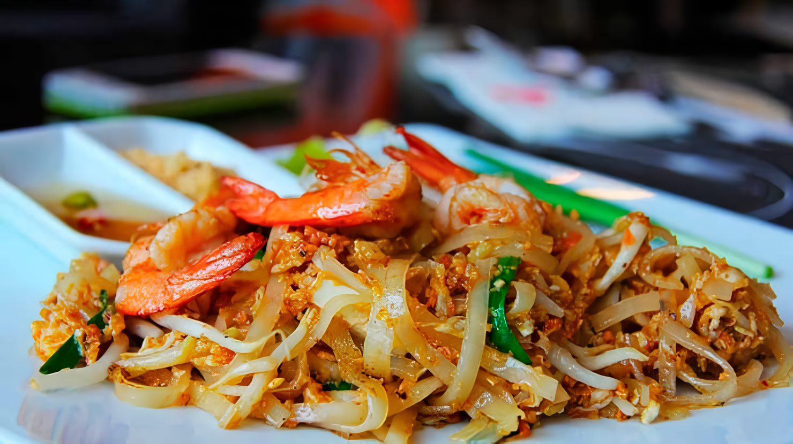
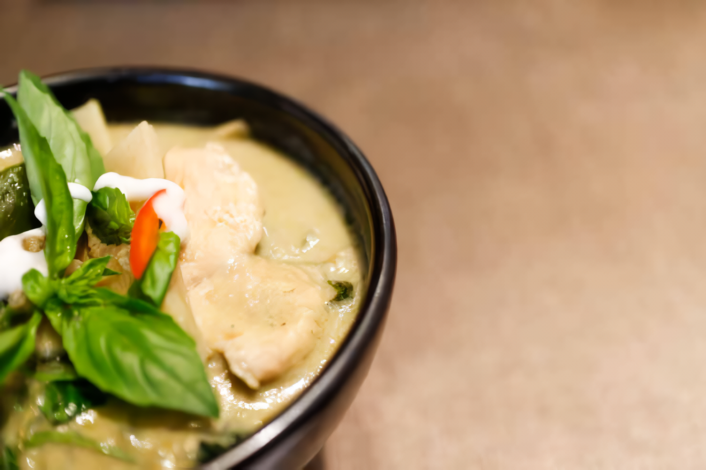

Arroz frito ou kao pat
R$ 32,50

Arroz jasmin preparado em frigideira, carne suína ou de frango, ovo e vegetais
diversos, como
cenoura, pimentão e cebola.
Khao Man Kai
R$ 30,50
Peito de frango temperado, arroz branco e a água na qual o frango cozinhou ganha
pepinos e molho de pimenta para se transformar em sopa.
Green Papaya Salad
R$ 22,50
Tomate-cereja, vagem, castanhas, molho de peixe, lascas de mamão-papaya verde,
camarão ressecado e temperos como alho, pimenta, sal, limão e açúcar.
Thai Spicy Pork Stew
R$ 29,99
Arroz que passou do ponto de cozimento e acabou, o cereal se junta a leite de
coco fresco e pedaços generosos de manga para se transformar em um manjar saboroso.
Kai med ma muang
R$ 29,99

Um prato à base de pés de galinha, caju, molho de soja, pimentas e cebola.
Bua loy
R$ 25,00
Batata doce, pandan, taro, farinha de arroz, farinha de tapioca, agua fria, leite
de coco açucar, sal e ovo.